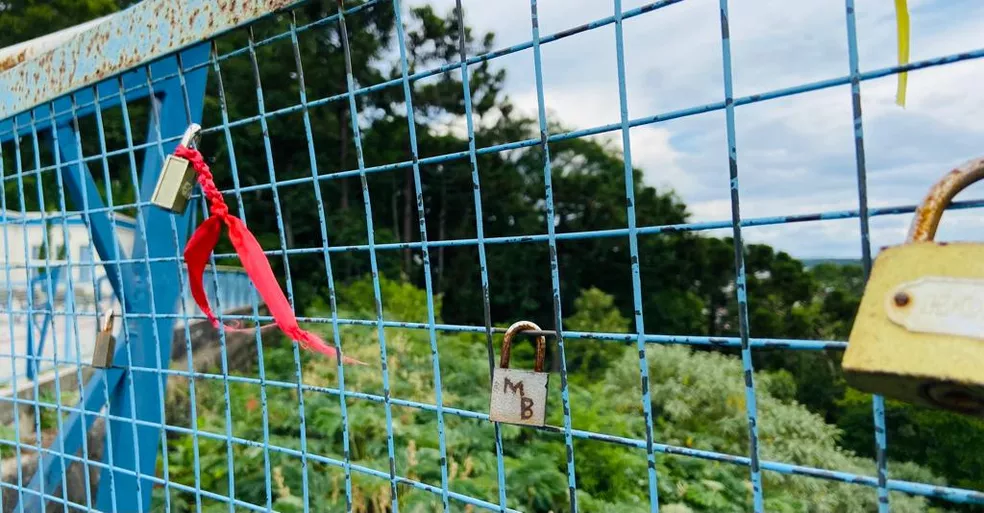
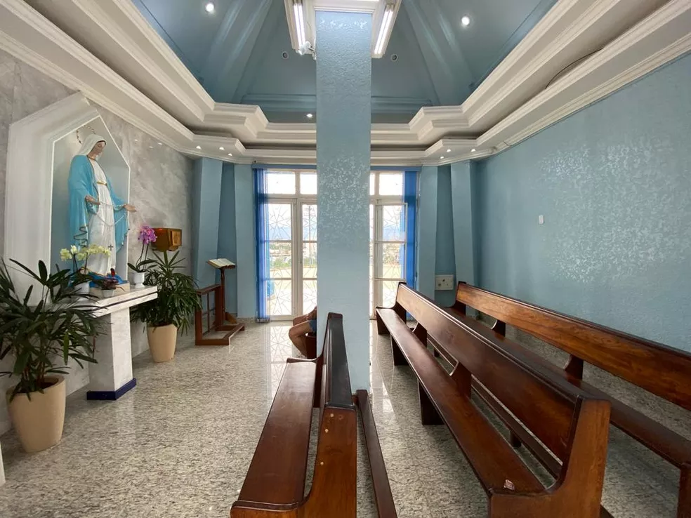
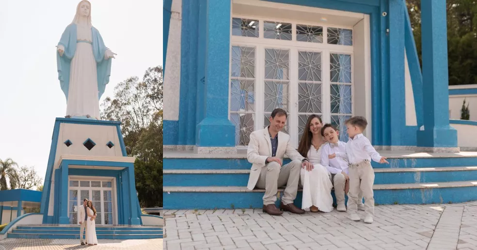

No dia 16 de setembro de 1957, Irati, na região central do estado, ganhou como presente de 50 anos um novo local para a população depositar as preces. Uma imagem de Nossa Senhora das Graças, de 22 metros de altura, instalada no topo de uma colina.
A posição, estratégica, permite que uma das representações de Maria de Nazaré seja vista de quase toda a cidade.
No episódio 64 do PodParaná, publicado nesta sexta-feira (11), o g1 conta a história do monumento, que por muito tempo foi considerado pela comunidade católica como a maior imagem da santa no mundo.
Atualmente, o ponto turístico em que a santa está é chamado de Colina Nossa Senhora das Graças. O bairro leva o mesmo nome.
A região fica próxima a um dos acessos de Irati, quase às margens da BR-27. No ambiente, há três locais para fiéis rezarem, sendo um deles logo abaixo da imagem.
Há, também, um mirante no local, onde devotos começaram a prender cadeados, em uma atitude similar ao que acontecia na ponte Des Arts, em Paris, famosa entre visitantes apaixonados.
Segundo estudos do historiador José Maria Orreda, que morreu em 2014, a construção da santa representa um marco para Irati, com destaque para o envolvimento não só da comunidade local, mas também de municípios da região para que ela fosse erguida.
Não bastasse a devoção lapidada no decorrer dos anos, há uma coincidência histórica que também liga à santa ao município.
Segundo a igreja católica, a primeira aparição de Nossa Senhora das Graças aconteceu em 1830, em Paris. No mesmo ano, há quase 10 mil quilômetros de distância, a terra do Rio de Mel era batizada com o nome que tem hoje, Irati.
DevoçãoA história mostra que a devoção do povo de Irati cresceu a partir da construção do monumento. Até hoje são feitas celebrações na colina, além de peregrinações.
O local, que é gerido pela Diocese de Ponta Grossa, passou a aceitar sacramentos, como casamentos, há pouco tempo.
A corretora e auxiliar jurídica, Caroline Less, junto ao marido, Cristhian Emanuel, foram as primeiras pessoas a casar, em 2020, aos pés da santa. A cerimônia foi em uma pequena capela que fica logo abaixo da imagem, em uma celebração com poucas pessoas.
A construção da santa é repleta de curiosidades, entre elas, a altura. Dos 22 metros, 9 são da base e 13 do monumento em si.
Confira outros detalhes da estátua, segundo dados da prefeitura, Paróquia São Miguel e Comissão de Manutenção da Imagem da Santa.
Pesa cerca de 10 toneladas.
Pela localização em que está, pode ser vista de quase toda a cidade.
Foi considerada, por anos, como a maior estátua do mundo de Nossa Senhora das Graças. Mas o posto foi perdido após a inauguração de uma imagem de quase 25 metros, da mesma santa, em Laurentino, Santa Catarina.
Para ser erguida, foi dividida em 70 peças e transportada para o município de caminhão.
Pouco antes da inauguração, em 13 de setembro de 1957, o então papa Pio 12 mandou uma carta aos moradores de Irati concedendo ao município a chamada bênção apostólica.
A escadaria para a colina da santa tem 197 degraus. A do Cristo Redentor, em comparação, tem 220.
Atualmente, o ponto turístico em que a santa está é chamado de Colina Nossa Senhora das Graças. O bairro leva o mesmo nome.
A região fica próxima a um dos acessos de Irati, quase às margens da BR-27. No ambiente, há três locais para fiéis rezarem, sendo um deles logo abaixo da imagem.
Há, também, um mirante no local, onde devotos começaram a prender cadeados, em uma atitude similar ao que acontecia na ponte Des Arts, em Paris, famosa entre visitantes apaixonados.
Segundo estudos do historiador José Maria Orreda, que morreu em 2014, a construção da santa representa um marco para Irati, com destaque para o envolvimento não só da comunidade local, mas também de municípios da região para que ela fosse erguida.
Não bastasse a devoção lapidada no decorrer dos anos, há uma coincidência histórica que também liga à santa ao município.
Segundo a igreja católica, a primeira aparição de Nossa Senhora das Graças aconteceu em 1830, em Paris. No mesmo ano, há quase 10 mil quilômetros de distância, a terra do Rio de Mel era batizada com o nome que tem hoje, Irati.
A história mostra que a devoção do povo de Irati cresceu a partir da construção do monumento. Até hoje são feitas celebrações na colina, além de peregrinações.
O local, que é gerido pela Diocese de Ponta Grossa, passou a aceitar sacramentos, como casamentos, há pouco tempo.
A corretora e auxiliar jurídica, Caroline Less, junto ao marido, Cristhian Emanuel, foram as primeiras pessoas a casar, em 2020, aos pés da santa. A cerimônia foi em uma pequena capela que fica logo abaixo da imagem, em uma celebração com poucas pessoas.
A construção da santa é repleta de curiosidades, entre elas, a altura. Dos 22 metros, 9 são da base e 13 do monumento em si.
Confira outros detalhes da estátua, segundo dados da prefeitura, Paróquia São Miguel e Comissão de Manutenção da Imagem da Santa.
Pesa cerca de 10 toneladas.
Pela localização em que está, pode ser vista de quase toda a cidade.
Foi considerada, por anos, como a maior estátua do mundo de Nossa Senhora das Graças. Mas o posto foi perdido após a inauguração de uma imagem de quase 25 metros, da mesma santa, em Laurentino, Santa Catarina.
Para ser erguida, foi dividida em 70 peças e transportada para o município de caminhão.
Pouco antes da inauguração, em 13 de setembro de 1957, o então papa Pio 12 mandou uma carta aos moradores de Irati concedendo ao município a chamada bênção apostólica.
A escadaria para a colina da santa tem 197 degraus. A do Cristo Redentor, em comparação, tem 220.